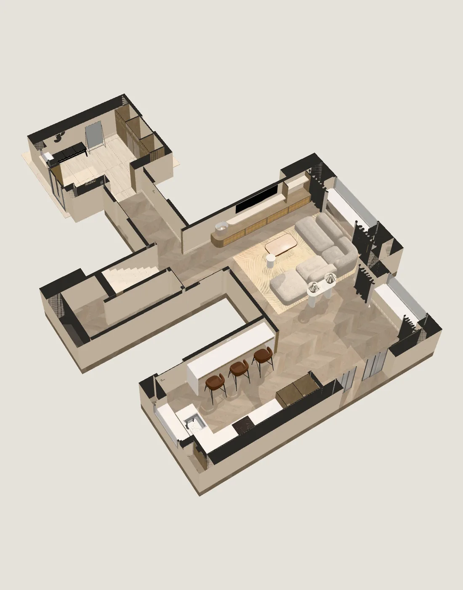
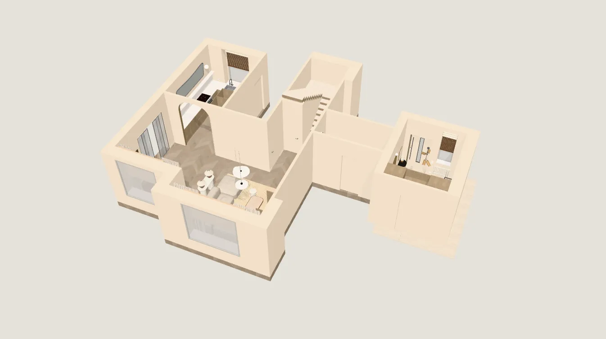

Мальцево · гостиная, кухня и прихожая · ноябрь 2026
WABI-
SABI
Ваби-саби — красота несовершенного: известковая штукатурка с живой фактурой, дерево с открытой текстурой, латунь, которая темнеет со временем. Ничего глянцевого и ничего лишнего.
Здесь вся квартира в 3D: прихожая, коридор, гостиная и кухня в трёх вариантах. Модель можно покрутить, снять и вернуть потолок, переключить вариант кухни, убрать стеллаж у ТВ и встать внутрь — в одну из семи точек обзора.

Квартира
Все комнаты одной моделью. Потолок по умолчанию снят, чтобы комнаты было видно сверху. «Срез стен» обрезает стены на высоте 1,35 м — получается объёмный план. Кухня — в трёх вариантах, стеллаж у ТВ можно убрать; всё переключается одной кнопкой, в том числе когда вы внутри.

Крутите мышью или пальцем · кружки с номерами — точки обзора
Ведите, чтобы осмотреться · белые кружки на полу — соседние точки
Кухня, вариант 1 — холодильник встроен справа у арки, у стены стойка